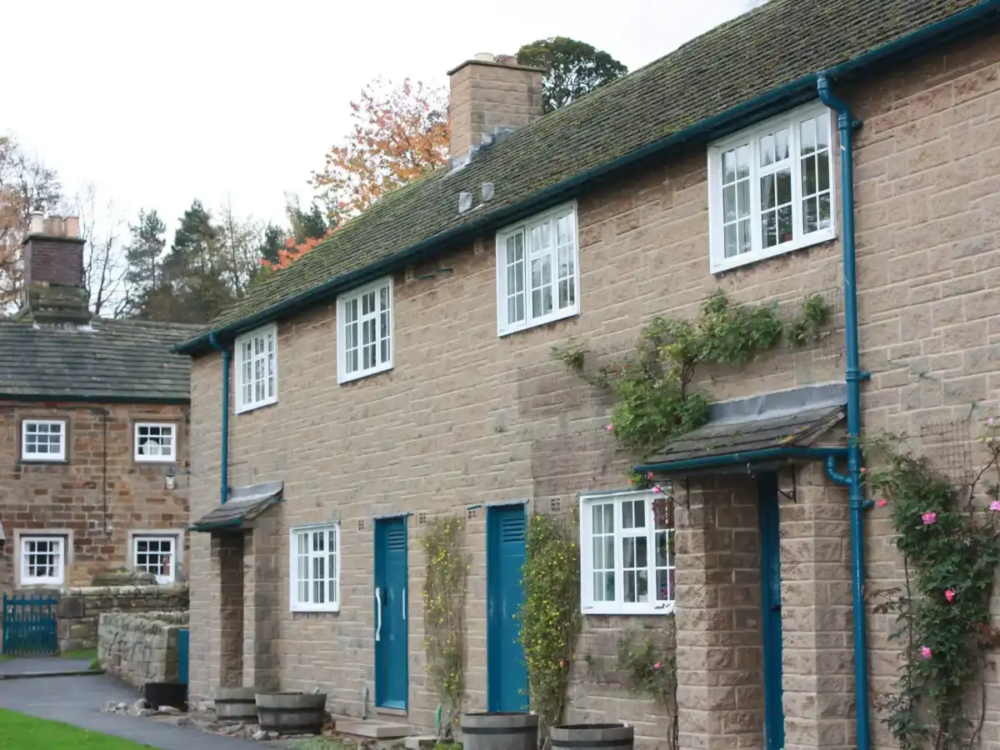
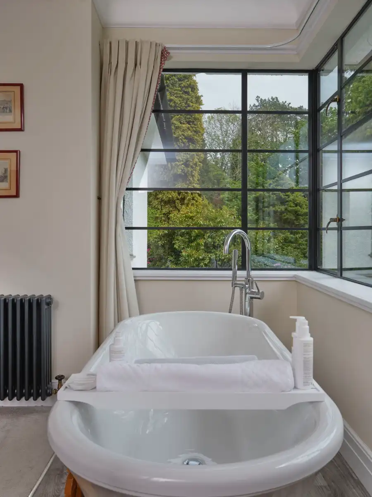
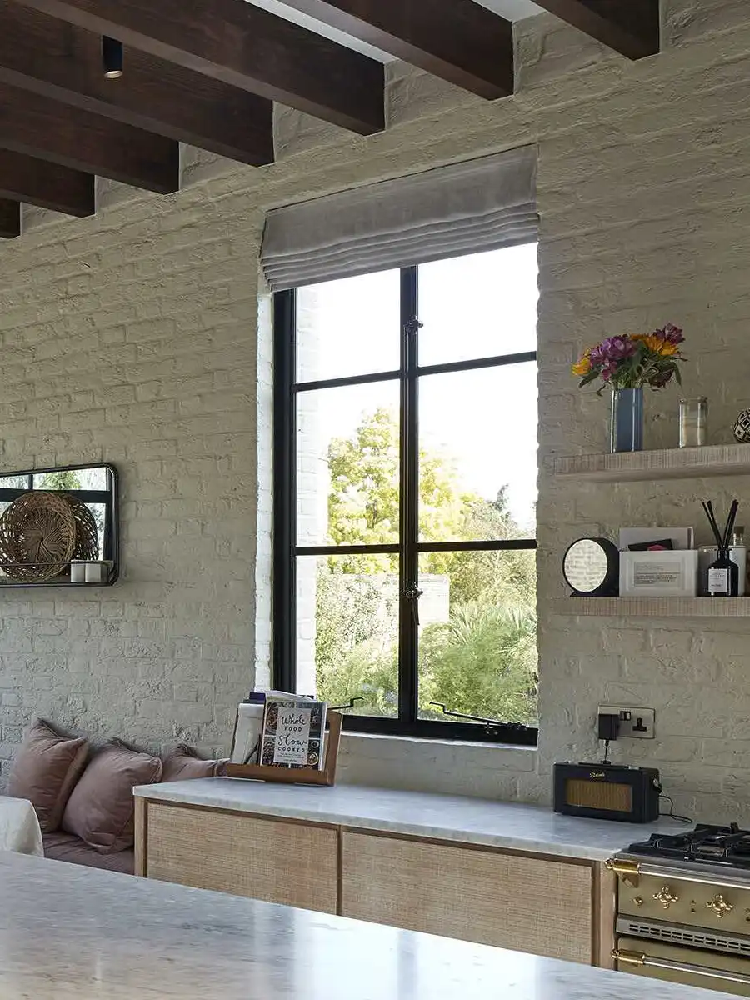
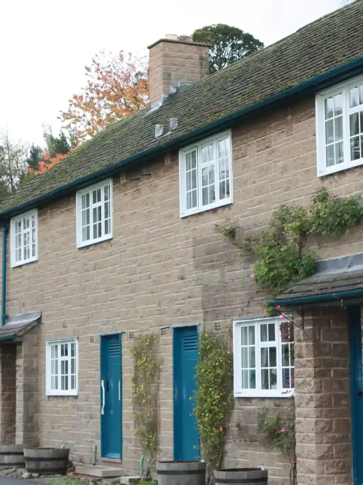
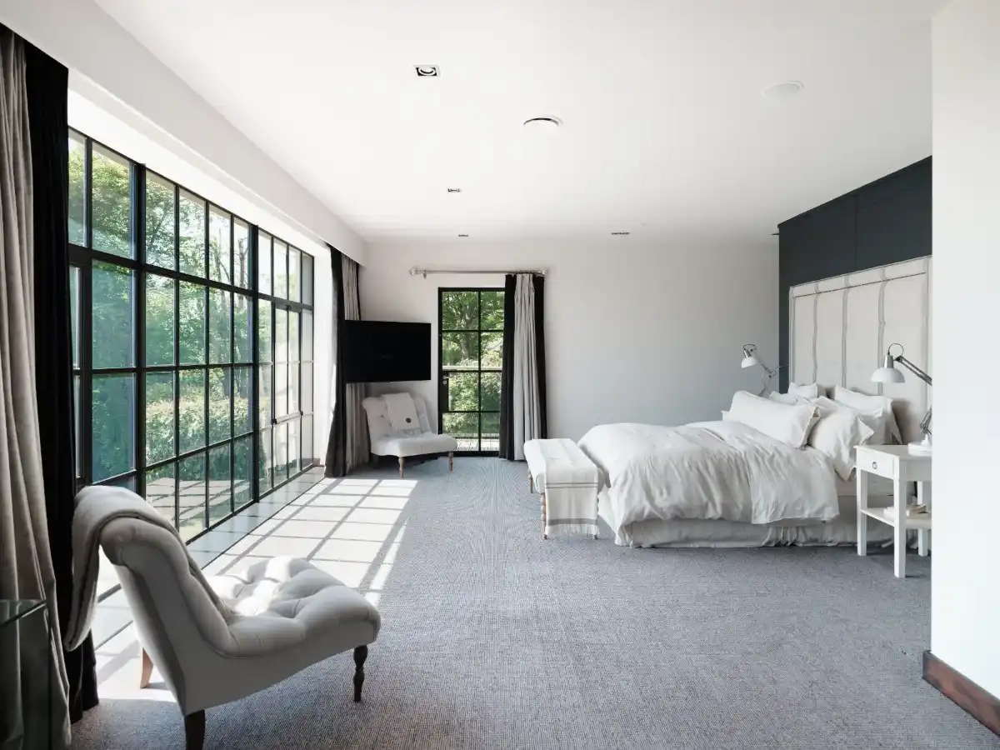

Crittall
Windows
Crittall windows are the original Crittall product and combine heritage design with lasting strength. Their slim steel frames maximise light and offer a timeless look for any property.




Available across the UK & Ireland, Crittall windows are designed for both residential and commercial projects.
Every Crittall window is made to measure, tailored to suit your opening size, layout and property style. They are the timeless choice for contemporary or traditional homes.
Crittall windows are premium steel framed windows with ultra slim sections and exceptional durability. Suited to both contemporary and traditional properties, their refined frames maximise natural light without compromising on strength or security.
Steel is stronger than aluminium or uPVC, enabling slimmer profiles and a refined architectural finish. Crittall windows are durable, low maintenance, and ideal for listed buildings, preserving the original aesthetic while offering improved performance.
As an approved Crittall® distributor, established in 1997, we are an award winning, highly rated, family run business. Our expert installation teams deliver genuine Crittall products nationwide across the UK and the Republic of Ireland, combining craftsmanship with industry leading products.
A wide range of glazing bar configurations are available, from contemporary to traditional styles. We can also offer cosmetic bars as an alternative to traditional steel glazing bars, replicating the same visual appearance while delivering improved thermal performance and greater energy efficiency.
A wide range of premium handles and finishes are available, allowing you to tailor every detail to suit your property.
View our Brochures
Any RAL Colour — Virtually unlimited design flexibility.
Available in single or double glazing, including clear, frosted, and reeded privacy glass.

We welcome enquiries of all sizes and will respond promptly with thoughtful advice and next steps.